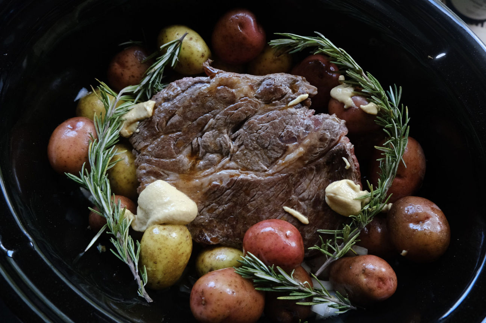

Perfect Pot Roast by Jak

"Hearty, warm, and delicious"
Ingredients:
- olive oil
- 2-3 pound chuck roast
- yellow onions
- garlic
- pound of tiny potatoes
- carrots
- apple cider
- balsamic vinegar
- dijon mustard
- fresh thyme
- fresh rosemary
- bone broth
Cooking Steps:
- Place the onions, carrots, and potatoes in the slow cooker,
forming a little nest for the roast to lay in.
- Before placing your roast in the pot, rub your roast down with some salt and pepper,
then sear it on all sides in a hot pan on the stove with butter or olive oil.
This will create basically a crust around your roast and will keep the
flavor of it while its cooking in the slow cooker. Its tempting to skip
this step but don't! It really makes a difference.
- Once your roast is all seared, place it in the slow cooker
along with the remaining ingredients. Cook on low for 8 hours.
Future you will love past you for this one.
Enjoy!
Credit for this recipe goes to Jak Major with the Buttermilk Club | See Recipe
Home